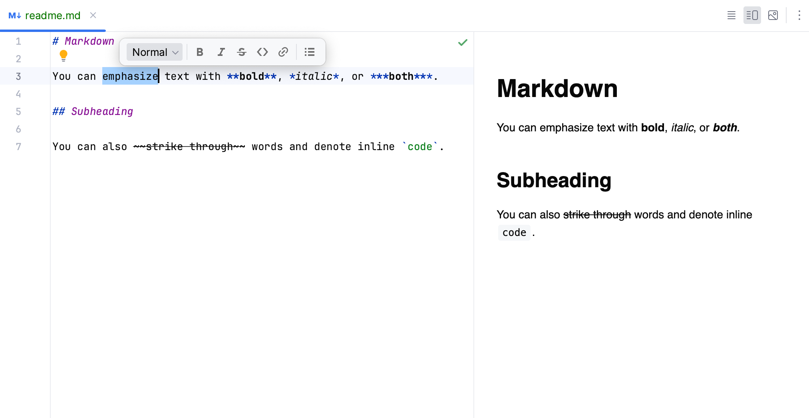

Atelier 10
Dans cette séance de laboratoire, vous allez pratiquer la configuration d'un pipeline d'intégration continue GitLab. Vous travaillerez avec un projet modèle Maven prêt à l'emploi.
Préparation
-
Créez un nouveau projet Maven
CiTestProject, en utilisant le générateur d'archétypes :
mvn archetype:generate \ -DgroupId=ca.uqam.info \ -DartifactId=CiTestProject \ -DarchetypeArtifactId=maven-archetype-quickstart \ -DinteractiveMode=falseSi vous êtes sous Windows, supprimez le
\et écrivez la commande sur une seule ligne. Protégez chaque argument en l'encapsulant dans des"", par exemple"-DgroupId=ca.uqam.info". -
Connectez-vous à GitLab et créez un nouveau projet
CiTestProject, en utilisant le signe+en haut à gauche- Ne pas initialiser un fichier README
- Laissez-le public
- Liez les projets :
Préliminaires CI
L'objectif principal de l'intégration continue est de s'assurer que
votre logiciel ne régresse jamais. Plutôt que de permettre des
modifications arbitraires sur la branche main, les changements doivent être demandés, et la décision d'accepter ou de rejeter les modifications doit être informée.
Protéger la branche main
Protéger la branche main est une condition préalable à une CI significative. Plutôt que de modifier main localement et de pousser de nouveaux commits vers le serveur :
- Les développeurs ne peuvent pousser que sur de nouvelles branches.
- Les développeurs demandent une fusion de leur branche vers
main. - Un responsable de projet approuve la demande de fusion, et un nouveau commit sur
mainest créé côté serveur.
À vous de jouer
Dans un premier temps, nous allons nous assurer que la branche main de votre dépôt rejette les commits directs :
- Accédez à votre projet sur GitLab
- Allez dans
Paramètres -> Dépôt -> Branches protégées - Pour la branche
main...- laissez
Autorisé à fusionnertel quel - définissez
Autorisé à pousser et fusionnersurPersonne
- laissez
Une fois que vous avez configuré la protection de la branche main, il est temps de vérifier son efficacité :
- Créez un nouveau commit sur
main, par exemple en créant un nouveau fichier texte vide ou en ajoutant un commentaire javadoc. - Essayez de pousser le nouveau commit vers le serveur.
- Vérifiez que le commit est rejeté.
- Supprimez à nouveau votre commit local (sans perdre les modifications que vous avez effectuées) :
git reset --soft HEAD~1
Explication :resetsupprime le dernier commit, l'optionsoftpréserve le contenu des fichiers, etHEAD~1permet de naviguer vers "1 commitavant leHEADactuel".
Demandes de fusion
Ensuite, vous allez pratiquer la soumission de votre travail de la manière correcte. Plutôt que d'ajouter votre commit à main, puis de pousser...
- Créez et basculez sur une nouvelle branche
feature. - Faites un commit sur votre branche
feature. - Poussez la branche
featureversorigin(le serveur GitLab). - Émettez une demande de fusion en utilisant l'interface Web de GitLab.
- Acceptez la demande de fusion.
À vous de jouer
Suivez la procédure décrite :
- Utilisez
git checkout -b featurepour créer une nouvelle branche. - Utilisez
git add somefileetgit commit -m "ajout d'une fonctionnalité"pour créer un nouveau commit sur la branchefeature. - Utilisez
git push origin main featurepour envoyer votre branche vers le serveur GitLab. - Connectez-vous à GitLab, naviguez vers votre projet, sélectionnez votre branche dans le menu déroulant. Ensuite, sélectionnez "nouvelle demande de fusion" (bouton bleu).
- Dans la barre latérale gauche, sélectionnez la demande de fusion et acceptez-la. Sélectionnez
supprimer la branche feature après fusion. - Utilisez
git pullpour récupérer la version fusionnée localement.
Pipelines CI
Jusqu'à présent, la demande de fusion n'a donné aucune information sur la qualité de votre commit sur la branche feature.
- L'objectif est maintenant de configurer des vérifications et des équilibres pour enquêter sur l'état des commits actuels.
- De cette façon, toute personne tentant une fusion, c'est-à-dire
évaluant une demande de fusion, saura si le code peut être accepté en
toute sécurité sur
main.
Toute la configuration de l'intégration continue avec GitLab se fait à l'aide d'un fichier .gitlab-ci.yml. Le fichier doit simplement exister pour que GitLab exécute un pipeline CI.
- Créez un fichier
.gitlab-ci.ymldans votre projet. Il doit se trouver à la racine, c'est-à-dire juste à côté du fichierpom.xmlou.gitignore. - En haut du fichier, configurez l'image du conteneur à utiliser pour
l'exécution du pipeline CI. En première ligne du fichier, entrez :
image: maven:3.9.8-amazoncorretto-21
Vérificateur de fichiers inutiles
Le premier job CI à implémenter sera un vérificateur de fichiers inutiles, qui échoue le pipeline chaque fois que des fichiers .class sont stockés dans votre dépôt.
- Chaque runner doit être associé à une étape CI. L'option la plus
simple consiste à sélectionner l'une des étapes par défaut, par exemple
build. - Les runners vivent dans un environnement Linux, donc vous pouvez appeler n'importe quel script Linux pour tester la qualité de votre commit.
- Si aucune restriction supplémentaire n'est configurée, l'ensemble du pipeline CI est appelé pour chaque commit sur n'importe quelle branche envoyée au serveur.
À vous de jouer
- Ajoutez un runner qui retourne un code de sortie non nul (par exemple
1), si des fichiers.classsont trouvés dans le commit, exemple :
- Après les modifications apportées à votre fichier
.gitlab-ci.yml, créez un nouveau commit sur une nouvelle branche. - Émettez une demande de fusion et vérifiez que le pipeline CI a été activé.
- Acceptez la demande de fusion.
- Compilez votre projet en utilisant
mvn clean compile. - Faites un autre commit et poussez. Vérifiez que le pipeline rejette votre commit le plus récent.
Maven atomique
Dans ce cours, vous avez déjà appris à configurer Maven pour exécuter des contrôles de qualité sur votre code. Un premier pipeline significatif consiste à appeler tout le cycle de vie Maven par un seul runner.
À vous de jouer
Configurez un pipeline Maven atomique fonctionnel :
- Créez un nouveau runner qui appelle
mvn clean package -B. - Faites un commit sur une nouvelle branche
atomicmaven. - Vérifiez que le pipeline passe.
Vérifiez que le pipeline rejette un code défectueux :
- Apportez une modification du code qui empêche la compilation, par exemple, supprimez un
;à la fin d'une ligne de code. - Faites un commit et poussez à nouveau.
- Vérifiez que le pipeline échoue maintenant.
Phases Maven
Jusqu'à présent, nous avons exécuté toutes les phases de Maven jusqu'à package dans un seul runner.
- Malheureusement, ce n'est pas un pipeline très sophistiqué. En cas d'échec, nous ne voyons pas facilement la raison.
- Une meilleure approche consiste à associer les
stagesCI de GitLab aux différentesphasesde Maven afin d'obtenir des retours plus détaillés sur ce qui se passe.
À vous de jouer
- Surcharger les stages CI par défaut, en définissant une nouvelle étape pour chaque phase du cycle de vie Maven par défaut.
- Définir un runner individuel pour chaque phase de Maven jusqu'à (y compris)
install:- Le premier runner appelle
validate. - Le deuxième runner appelle
.... - ...
- Le premier runner appelle
- Faites un commit et poussez votre configuration de pipeline.
- Vérifiez que le pipeline affiche maintenant des stages individuels pour chaque phase du cycle de vie Maven.
Optimisation des stages
La configuration CI précédente est quelque peu gourmande en ressources, car les phases Maven précédentes sont répétées par plusieurs runners, gaspillant ainsi du temps CPU et ralentissant l'exécution du pipeline.
- Malheureusement, il n'est pas possible d'exécuter des phases Maven individuelles de manière isolée.
- Il est cependant possible d'inclure certaines optimisations, afin d'éviter d'exécuter plusieurs fois les mêmes plugins.
Les paramètres Maven ci-dessous peuvent être utilisés pour ignorer certains plugins Maven spécifiques :
-DskipTestsignore les tests unitaires, les tests d'intégration et les rapports de couverture lors des phasestestetvalidate.-Djacoco.skip=trueignore les rapports de couverture lors des phasestestetvalidate.-Dcheckstyle.skip=trueignore la vérification Checkstyle lors de la phaseverify.-Dmaven.javadoc.skip=trueignore la vérification et la génération de javadoc lors de la phasepackage.
Cela peut être pris en compte pour différents runners Maven :
- Checkstyle est associé à la phase
validate: nous pouvons ignorer l'exécution de Checkstyle pour toutes les phases suivantes. Vérifier une fois suffit.
À vous de jouer
- Modifiez les commandes Maven de vos runners précédents pour ignorer les plugins Maven qui ont déjà rempli leur rôle lors des étapes précédentes.
- Vérifiez que votre pipeline fonctionne toujours correctement, c'est-à-dire qu'il détecte toujours :
- Les violations de Checkstyle
- Les javadocs manquants
- Les tests échoués
Extraction des artefacts
JUnit et Jacoco produisent tous deux des artefacts au-delà de "Succès" ou "Échec" qui peuvent fournir des détails utiles sur la qualité d'un commit :
- Rapports de tests détaillés : Quels tests ont réussi ou échoué.
- Rapports de couverture : Quel pourcentage de lignes de code est couvert par des tests.
- JavaDoc : Code HTML du site web.
Une bonne configuration CI fournit, pour chaque commit, des informations faciles à capturer, ainsi que des métriques de succès ou d'échec.
À vous de jouer : Rapports JUnit
- Le plugin Surefire (qui exécute les tests unitaires et d'intégration) génère un rapport de tests détaillé dans :
target/surefire-reports/. - GitLab peut utiliser ces rapports pour afficher des informations sur les résultats individuels des tests lors de l'exécution du pipeline CI.
- Indiquez à GitLab de récupérer ces artefacts depuis le runner avec :
À vous de jouer : Rapports Jacoco
- Le plugin Jacoco peut générer des rapports de couverture pour les
tests unitaires et d'intégration combinés, avec la configuration
suivante (invocée lors de la phase
verify) :
<!-- Plugin for coverage report --> <!-- Visual test report available at: target/site/jacoco/index.html --> <!-- Plugin for coverage report --> <!-- Visual test report available at: target/site/jacoco/index.html --> <!-- machine readable report at: target//site/jacoco/jacoco.xml --> <plugin> <groupId>org.jacoco</groupId> <artifactId>jacoco-maven-plugin</artifactId> <version>0.8.12</version> <configuration> <excludes> <!-- ignore view package --> <exclude>**/view/*</exclude> </excludes> </configuration> <executions> <execution> <goals> <goal>prepare-agent</goal> </goals> </execution> <!-- Associate with verify phase, to grab unit AND integration test results.--> <execution> <id>report</id> <phase>verify</phase> <goals> <goal>report</goal> </goals> </execution> <execution> <id>jacoco-check</id> <goals> <goal>check</goal> </goals> <configuration> <rules> <rule> <element>PACKAGE</element> <limits> <limit> <counter>LINE</counter> <value>COVEREDRATIO</value> <minimum>80%</minimum> </limit> </limits> </rule> </rules> </configuration> </execution> </executions> </plugin> - Un rapport de test se trouve dans :
target/site/jacoco/index.html. - Cependant, GitLab a besoin du rapport non pas en HTML, mais dans un format lisible.
- L'astuce consiste à ajouter une ligne Linux qui extrait la couverture totale à partir du rapport de test :
cat target/site/jacoco/index.html | grep -o 'Total[^%]*%' | sed 's/<.*>/ /; s/Total/Jacoco Coverage Total:/' - GitLab sait comment consommer cette ligne imprimée dans la console
du runner. Il suffit de signaler son existence avec le mot-clé
coverage. -
En utilisant à la fois Maven et la commande
cat, nous pouvons renvoyer le rapport de couverture totale au pipeline GitLab :
-
Configurez le pipeline comme décrit, laissez-le s'exécuter et vérifiez l'onglet
jobsdans votre pipeline finalisé. - Vérifiez que le dernier job affiche un nombre de couverture.
À vous de jouer : ApiDoc
- Le plugin
javadoccrée un dossier :target/apidocs. - Exécutez l'extraction du dossier pour le déployer, en utilisant le mot-clé
artifact: - Attendez que le pipeline s'exécute.
- Allez dans :
Déployer -> Pages, assurez-vous que les pages du projet sont activées. Désactivez la case à cocherdomaine unique. - Vérifiez que la documentation de votre projet est accessible à l'adresse suivante : https://yourgitlabname.pages.info.uqam.ca/yourproject/
Le job doit être nommé pages
Afin que le site Web soit accessible via Déployer -> Pages, il est important que le nom du job soit pages. Sinon, le pipeline s'exécutera correctement, mais aucun site Web ne sera accessible.
README en Markdown
En cours, vous avez déjà vu trois langages de balisage textuels pour les fichiers de configuration :
XML, pour MavenJSON, pour la sérialisation d'objets et GradleYAML, pour la configuration du pipeline GitLab CI
Tous ces langages sont destinés à l'interprétation par des machines, c'est-à-dire que nous les écrivons pour fournir des instructions aux machines.
- Les langages de balisage ne sont pas nécessairement destinés aux machines : La syntaxe Markdown est un langage simple de modélisation pour décrire des documents structurés destinés aux humains.
- Le Markdown peut être facilement compilé en HTML, la documentation du cours en est un exemple.
- GitHub / GitLab rend automatiquement les fichiers markdown en HTML lorsqu'un fichier
.mdest sélectionné dans leur interface web. - IntelliJ propose une vue partagée (plugin activé par défaut) pour les fichiers Markdown, permettant de prévisualiser instantanément le code HTML tout en rédigeant :
- GitHub / GitLab rend automatiquement les fichiers markdown en HTML lorsqu'un fichier

Fichier README.md du projet
Pour les projets logiciels, il est de bonne pratique de placer un fichier README.md à la racine du projet.
- Si le fichier existe, le serveur Git affichera automatiquement le contenu comme description du projet.
- Ce fichier est un point de départ recommandé pour conseiller les utilisateurs du logiciel sur :
- Le titre et l'intérêt du projet
- Comment télécharger et installer le projet (pour les non-développeurs, c'est-à-dire les utilisateurs) :
- Où / comment obtenir le projet compilé
- Quelle commande utiliser pour lancer le projet
- Comment obtenir les sources et contribuer (pour les développeurs) :
- Les prérequis du projet, c'est-à-dire ce qui doit être installé pour compiler le projet.
- Comment accéder à la documentation API
- Auteurs / mentions de contribution
- Si applicable : licences du logiciel
- La syntaxe Markdown est extrêmement simple et peut être utilisée pour divers cas.
- Par exemple, la documentation du projet XoxInternals peut être inspectée ici : README XoxInternals.
À vous de jouer
Familiarisez-vous avec les concepts de base de la syntaxe markdown, en utilisant : CETTE référence de syntaxe.
- Titres, sous-titres
- Texte gras, italique,
barré - Listes et énumérations :
- Premier élément
- Deuxième élément
- ...
- Hyperliens
-
Citations :
"Bruih ? Miow miooooow ! Croquettes !!" -- Keksli
-
Lignes et blocs de code :
Une ligne de code- Et aussi :
- Ajoutez un fichier README.md à votre projet de test, créez une documentation très minimale pour le titre du projet et les instructions d'exécution.